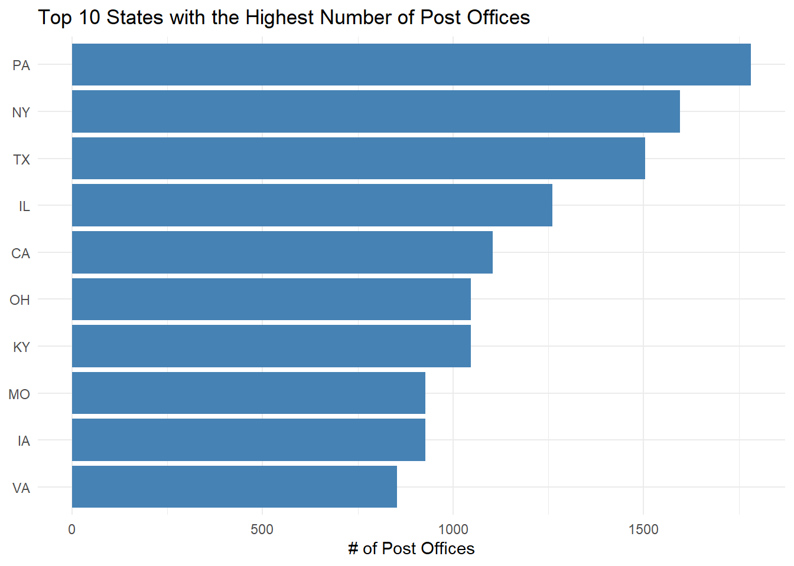
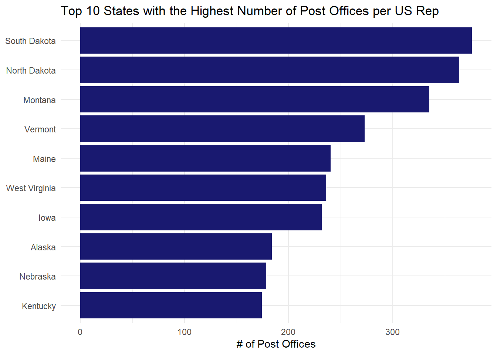
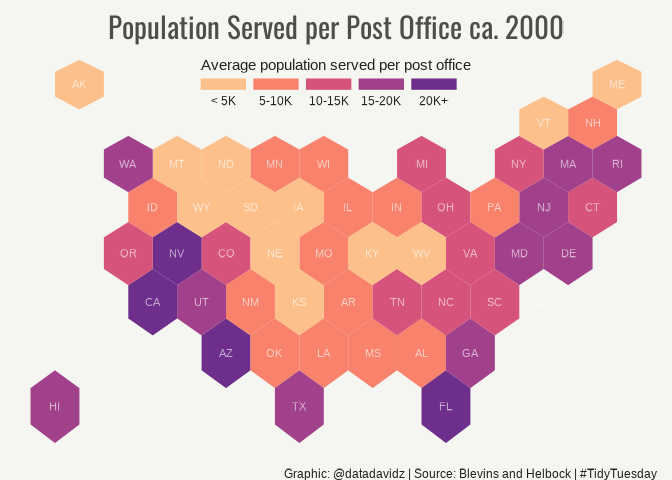

My data visualization based on a dataset of US Post Offices for 166,140 post offices that operated in the United States between 1639 and 2000.
A quick analysis of the weekly #TidyTuesday dataset organized by the R4DS Online Learning Community. My approach is to apply my data science skills to explore one question I have about the data and generate a visualization that addresses this question. The main purpose for me is to practice and try out new things. I am never completely satisfied with the end result but I do the best I can in a short period of time.
What I learned this week about R and the Tidyverse
- Creating a stacked area chart using
geom_areafunction inggplot2 - Slight adjustments in placing the axis title using the
marginfunction in the plot theme
Brief explanation of the dataset
This dataset is from DataIsPlural and contains reasons for CEO departures from S&P 1500 firms. Information is provided about the company name, CEO name and date of departure along with notes and links to articles which were used to assign the departure reason. Reasons were assigned to one of 9 different codes. Codes 1-4 were involuntary reasons such as CEO died or was ill and CEO was terminated for poor job performance or legal issues. Codes 5-6 were voluntary reasons such as the CEO retired or decided to leave for a new opportunity. Code 7 is mostly about a change following a merger or acquisition and in some cases the CEO stayed on with the new company. Code 8-9 are missing or data collection error.
Load libraries and data
library(tidyverse)
library(geojsonio)
library(rgdal)
library(broom)
library(rgeos)
library(viridis)
library(showtext)
font_add_google(name = "Oswald")
theme_set(theme_minimal())
#Load dataset from TidyTuesday repository
post_offices <- readr::read_csv('https://raw.githubusercontent.com/rfordatascience/tidytuesday/master/data/2021/2021-04-13/post_offices.csv')
us_reps <- read_csv(file = "../data/us_reps_state.csv") %>% janitor::clean_names()Wrangle
Initial conclusions from exploring the post_offices dataset.
- The established date for post offices ranged from 1877-2000.
- The discontinued date can be missing and would suggest the post office is still in operation as of 2000.
- The state and county is available for almost all of the post offices.
- The GNIS information including latitude and longitude is present for about 2/3 of the data.
The assumption is that the missing (NA) discontinued year means the post office is still operating. Based on this assumption, we calculate the number of post offices per state and as a ratio to the number of US House of Representatives for each state.
office_count <- post_offices %>%
select(id, name, state, established, discontinued) %>%
filter(is.na(discontinued)) %>%
group_by(state) %>%
summarize(offices = n(), .groups = "drop")
office_ratio <- us_reps %>%
left_join(tibble(state = state.name, id = state.abb), by = "state") %>%
left_join(office_count, by = c("id" = "state")) %>%
mutate(rep_ratio = offices / representatives_number,
pop_ratio = pop / offices) %>%
arrange(desc(pop_ratio))Visualize
Let’s first look at the states with the most number of post offices.
office_count %>%
arrange(desc(offices)) %>%
slice(1:10) %>%
mutate(state = fct_reorder(state, offices)) %>%
ggplot(aes(x = offices, y = state)) +
geom_col(fill = "steelblue") +
labs(title = "Top 10 States with the Highest Number of Post Offices",
x = "# of Post Offices",
y = NULL)
Now let’s look at the ratio of post offices per US representatives for each state.
office_ratio %>%
arrange(desc(rep_ratio)) %>%
slice(1:10) %>%
mutate(state = fct_reorder(state, rep_ratio)) %>%
ggplot(aes(x = rep_ratio, y = state)) +
geom_col(fill = "midnightblue") +
labs(title = "Top 10 States with the Highest Number of Post Offices per US Rep",
x = "# of Post Offices",
y = NULL)
The most post offices per state generally includes the most populous states while the most post offices per US representatives includes some of the less populous states. Kentucky and Iowa show up in both top ten lists. I decided from here that I was most interested in the average population served by the post offices in each state. I wanted to create a map but not using the US map but rather a hexbin representation I had come across previously.
Creating the hexbin map was more complicated than I thought it would be when I began. The first step was to download a geojson file which I found here. This file contained the boundaries for the hexagons for each state. The file is read using the geojsonio package into a SpatialPolygonsDataFrame class.
#geojsonio package
spdf <- geojson_read("../data/us_states_hexgrid.geojson", what = "sp")
#reformat the state name
spdf@data = spdf@data %>%
mutate(google_name = gsub(" \\(United States\\)", "", google_name))
# Show it (requires rgdal library)
plot(spdf)
We can then reformat the spdf data into a standard data frame using the tidy function from the broom package. Next, we need to calculate the center of each hexagon for adding the label with the state abbreviation. The centroid is calculated from the spdf data using a function from the rgeos package.
# reformat as data frame for ggplot
spdf_fortified <- tidy(spdf, region = "iso3166_2")
#calculate centroid of each hexagon for adding label
centers <- cbind.data.frame(data.frame(gCentroid(spdf, byid=TRUE), id=spdf@data$iso3166_2))
ggplot() +
geom_polygon(data = spdf_fortified, aes( x = long, y = lat, group = group), fill="skyblue", color="white") +
geom_text(data=centers, aes(x=x, y=y, label=id)) +
theme_void() +
coord_map()
Next, we add the ratio of state population to number of post offices and segregate into bins.
spdf_fortified <- spdf_fortified %>%
left_join(select(office_ratio, id, pop_ratio), by = "id") %>%
filter(!is.na(pop_ratio))
spdf_fortified$bin <- cut( spdf_fortified$pop_ratio , breaks=c(seq(0, 20000, 5000), Inf),
labels=c("< 5K", "5-10K", "10-15K", "15-20K", "20K+") , include.lowest = TRUE )Finally, we create the hexbin map with the post office data.
showtext_auto()
my_palette <- rev(magma(8))[c(-1,-8)]
p1 <- ggplot() +
geom_polygon(data = spdf_fortified, aes(fill = bin, x = long, y = lat, group = group) , size=0, alpha=0.9) +
geom_text(data=centers, aes(x=x, y=y, label=id), color="white", size=3, alpha=0.6) +
theme_void() +
scale_fill_manual(
values=my_palette,
name="Average population served per post office",
guide = guide_legend( keyheight = unit(3, units = "mm"), keywidth=unit(12, units = "mm"), label.position = "bottom", title.position = 'top', nrow=1)
) +
labs( title = "Population Served per Post Office ca. 2000",
caption = "Graphic: @datadavidz | Source: Blevins and Helbock | #TidyTuesday") +
theme(
legend.position = c(0.5, 0.9),
text = element_text(color = "#22211d"),
plot.background = element_rect(fill = "#f5f5f2", color = NA),
panel.background = element_rect(fill = "#f5f5f2", color = NA),
legend.background = element_rect(fill = "#f5f5f2", color = NA),
plot.title = element_text(family = "Oswald", size= 22, hjust=0.5, color = "#4e4d47", margin = margin(b = -0.1, t = 0.4, l = 2, unit = "cm")),
plot.caption = element_text(hjust = 0.95, vjust = 1)
) ### Summary
I felt this hexbin map was an effective and aesthetically-pleasing graphic for the analysis. The construction of the hexbin map was more complex than I imagined requiring a website download, multiple packages I don’t normally use and new data formats. I have seen people make similar plots using the geofacet package and I am interested whether this could simplify the process. However, this package doesn’t appear to be able to easily make the hexagon shapes.